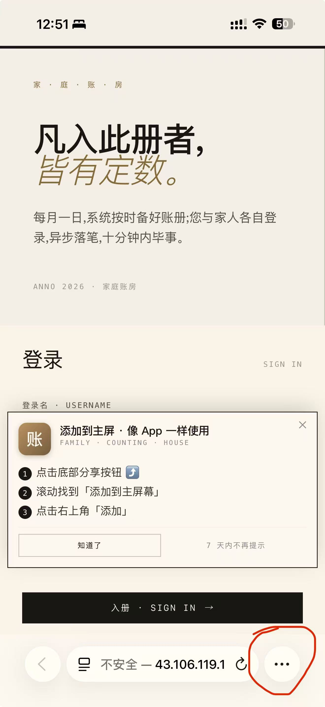
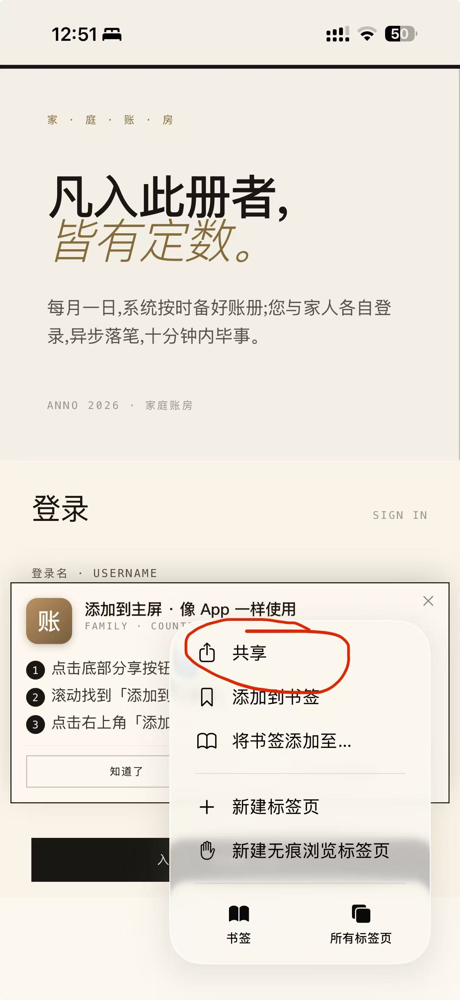
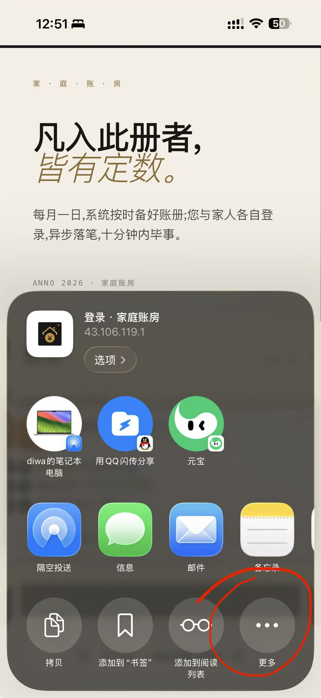
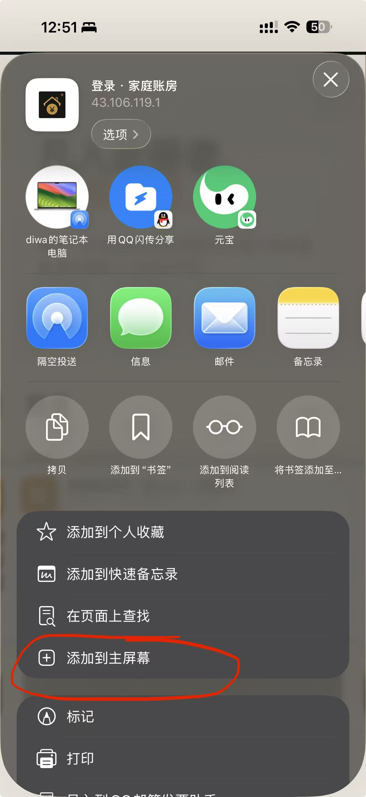

/ 移 · 动 · 端 · 引 · 导 · iOS · SAFARI
共享 → 添加到主屏
家庭成员第一次在 iPhone Safari 里打开账房,会看到一个底部卡片提示如何把它变成桌面图标。 添加后从主屏点开是 standalone 模式(无浏览器 UI),用起来跟 App 一样,不会再被弹出提示。
/ 实 · 操 · 流 · 程 · 4 · 步
家庭成员实际看到的操作过程
以下是真机 iPhone Safari 截图,iOS 18 中文版。添加到主屏幕需 4 步: ① 底部 ⋯ → ② 共享 → ③ 共享面板底部「更多」→ ④ 列表里点「添加到主屏幕」。
01
底部 ⋯ 按钮
SAFARI · MORE

02
选择「共享」
MENU · SHARE

03
底部「⋯ 更多」
SHEET · MORE

04
添加到主屏幕
ADD TO HOME

底部 ⋯→
共享→
更多→
添加到主屏幕
添 · 加 · 完 · 成 · 后 · 的 · 状 · 态
从 · Safari · 进 · 入
网页模式
- · 顶部 Safari URL bar / 底部工具栏
- · 占两条系统工具栏空间
- · 切换 App 时 Safari 整个进后台
- ·
navigator.standalone === false - · 提示 banner 仍会弹出(7 天后再次)
从 · 主 · 屏 · 进 · 入
Standalone 模式 ★
- · 全屏体验,无 Safari UI
- · 像 App 一样独立于 Safari 切换
- · 状态栏可自定义颜色(与 theme_color 一致)
- ·
navigator.standalone === true - · banner 不再弹出
触 · 发 · 条 · 件
const isIOS = /iPad|iPhone|iPod/
.test(navigator.userAgent);
const isSafari = /^((?!chrome|android|
crios|fxios).)*safari/i
.test(navigator.userAgent);
const inApp = window.navigator.standalone;
const isWX = /MicroMessenger/i
.test(navigator.userAgent);
const dis = +localStorage
.getItem('pwa_dismissed') || 0;
const expired = Date.now() - dis > 7*864e5;
if (isIOS && isSafari &&
!inApp && !isWX && expired) {
setTimeout(showBanner, 1500);
}配 · 套 · 文 · 件
/manifest.webmanifestPWA 元数据(name/icons/start_url)/img/icon-192.png通用 192×192/img/icon-512.png通用 512×512/img/apple-touch-icon-180.pngiOS 必须 — 不读 manifest iconslayout.html <head>apple-mobile-web-app-* 4 行 metaSecurityConfig放行 manifest + img/* GET
关 · 键 · Meta · 标 · 签
<link rel="manifest"
href="/manifest.webmanifest">
<meta name="apple-mobile-
web-app-capable" content="yes">
<meta name="apple-mobile-
web-app-status-bar-style"
content="black-translucent">
<meta name="apple-mobile-
web-app-title" content="账房">
<link rel="apple-touch-icon"
sizes="180x180"
href="/img/apple-touch-icon-180.png">
<meta name="theme-color"
content="#1a1714">